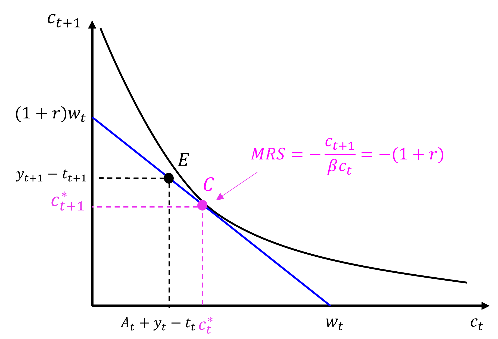
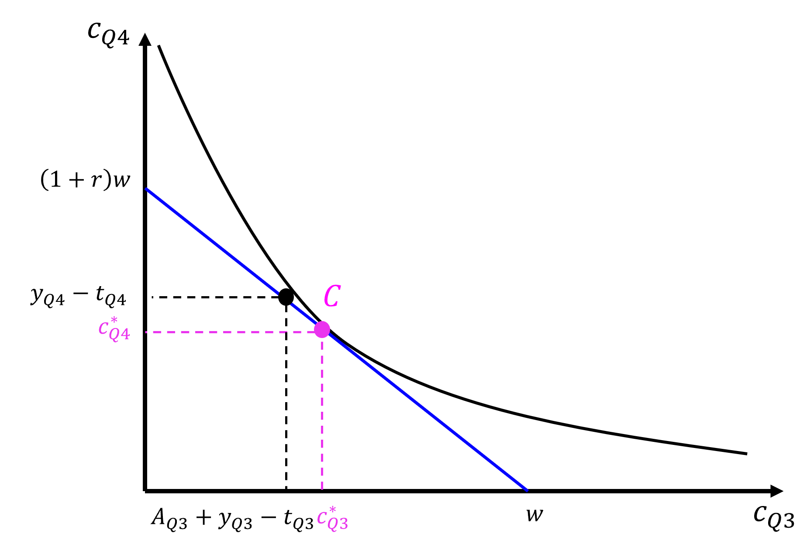
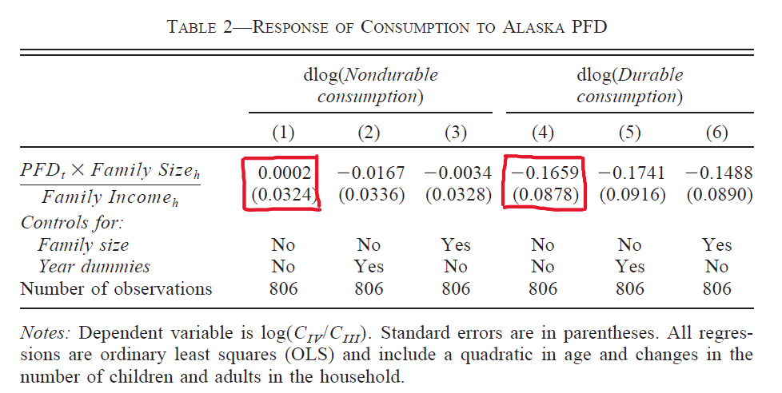
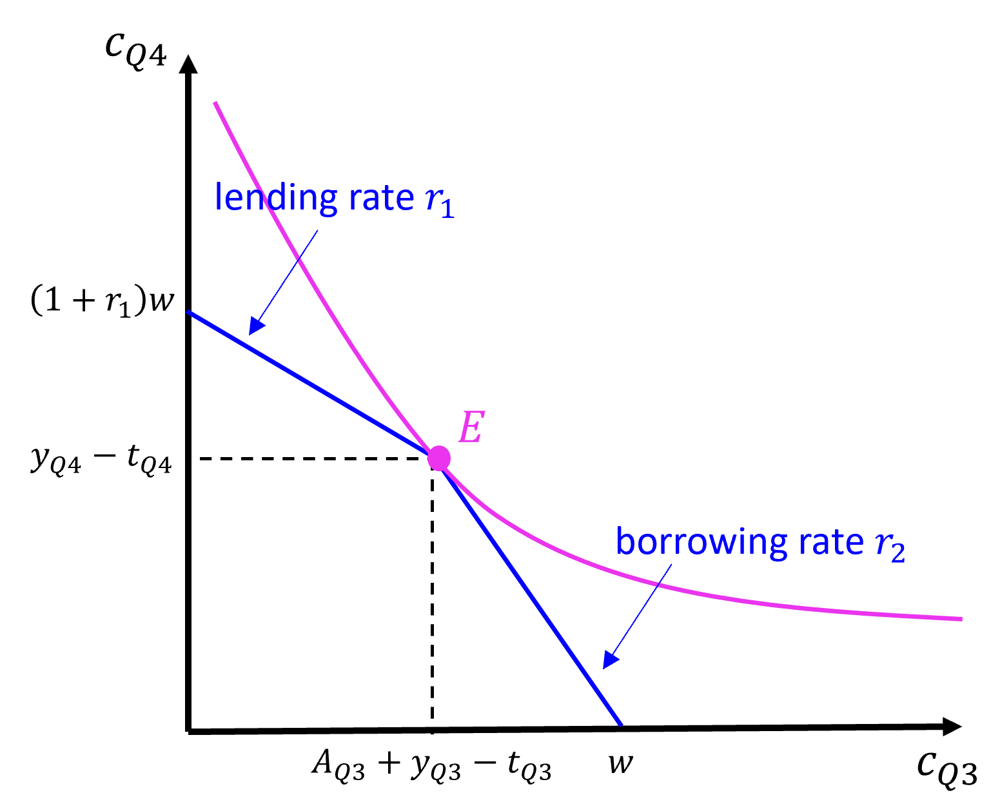
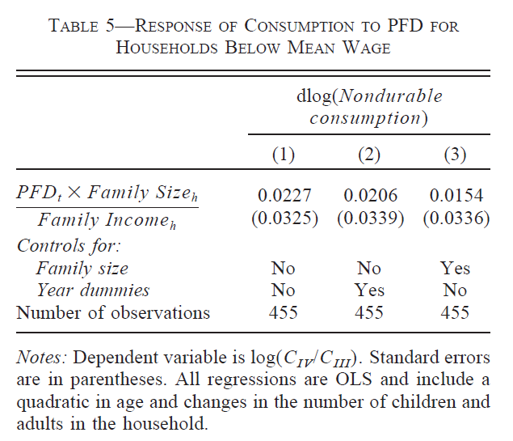
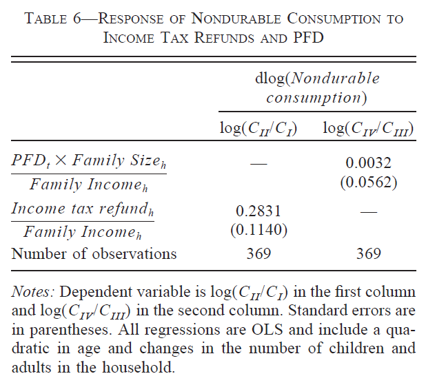
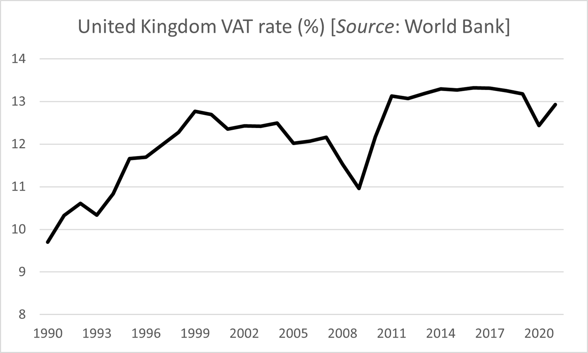

Chapter 4 Consumption
By the end of this chapter, you should be able to:
- Describe how households make consumption decisions using the multi-period consumption model.
- Explain how households make consumption decision under the Permanent Income Hypothesis (PIH)
- Describe how credit market imperfections affect household consumption decisions in the two-period life-cycle model.
- Analyse the effects of fiscal policy measures such as tax cuts and transfers on aggregate consumption.
4.1 Introduction
You can find a more detailed discussion of the model in the main reference for this part of the course:
Carlin, W. and Soskice D. (2023). Macroeconomics. Institutions, Instability, and the Financial system, 2nd Ed., Oxford University Press: Chapter 1
4.2 Multi-period model
In the previous chapter, we saw how households choose optimally how much to consume by allocating resources (saving) over their lifetime in a two-period model where a period corresponds to approximately 30 years. To analyse the effect of temporary fiscal policies implemented to stabilise the economy over the business cycle, we need to consider shorter periods that last between a quarter and a year as well as the possibility for household to borrow. The multi-period model provides the conceptual framework to discuss consumption decisions over these shorter spans of time.
4.2.1 Model setup
Assume Households live for an infinite number of periods, work, pay taxes and consume in all periods.
Lifetime utility
We assume that preferences for consumption over the lifetime are similar to those captured by the Cobb-Douglas utility function employed in the life-cycle model. However, to describe utility over more than two periods, it is easier to work with the logarithm version of the utility function.
To see why the two functions are equivalent ways of representing the same preferences, let’s take the example of the two-period Cobb-Douglas utility function: \[u_t = c_{t}^{\alpha}c_{t+1}^{1-\alpha}\] and take the logarithm on both sides: \[ln(u_t) = \alpha ln(c_{t})+ (1-\alpha)ln(c_{t+1})\] Then divide both sides by \(\alpha\): \[\frac{ln(u_t)}{\alpha} = ln(c_{t})+ \frac{(1-\alpha)}{\alpha}ln(c_{t+1})\] and simplifying: \[ u^*_t = ln(c_{t}) + \beta ln(c_{t+1}) \] where
- \(u^*_t =\frac{ln(u_t)}{\alpha}\) is a monotonic transformation of the Cobb-Douglas utility which maintains the same utility ranking for each bundle of consumption.
- \(\beta=\frac{1-\alpha}{\alpha}\) captures the subjective value of consuming in period \(t+1\) relative to period \(t\) (time preference parameter). If \(\beta<1\) households value future consumption slightly less than present consumption.
Lifetime utility over an infinite number of periods is represented by \[ u_t = ln(c_{t}) + \beta ln(c_{t+1}) + \beta^2 ln(c_{t+2}) + ... \] which implies that as consumption takes place further and further away in time, the utility derived from it today declines. In other words, households exhibit some degree of impatience (captured by \(\beta\)).
Lifetime budget constraint
\[\underbrace{c_{t} + \frac{c_{t+1}}{1+r} + \frac{c_{t+2}}{(1+r)^2} + ...}_{\text{Present value of consumption over the lifetime}} = \underbrace{Assets_t+ y_t - t_t + \frac{y_{t+1}-t_{t+1}}{1+r} + \frac{y_{t+2}-t_{t+2}}{(1+r)^2} + ...}_{\text{Present value of lifetime income} \: w_t} \] \(y_t - t_t\): disposable income (income minus tax)
\(Assets\): liquid (saving account) and illiquid assets (house)
Consumption and disposable income are discounted by the interest rate \(r\) (the price of one unit of income one period from now), which is assumed to be constant over time.
4.2.2 Optimal consumption and the Permanent Income Hypothesis (PIH)
As before the household problem is to choose how much to consume in each period such that lifetime utility is maximised subject to the lifetime budget constraint.
Household consumption problem: \[ \max_{c_{t},c_{t+1}} u_t = ln(c_{t}) + \beta ln(c_{t+1}) + \beta^2 ln(c_{t+2}) + ... \] subject to \[ c_{t} + \frac{c_{t+1}}{1+r} + \frac{c_{t+2}}{(1+r)^2} + ... = Assets_t+ y_t - t_t + \frac{y_{t+1}-t_{t+1}}{1+r} + \frac{y_{t+2}-t_{t+2}}{(1+r)^2} + ... = w_t \] The key optimality condition for this problem (= Consumption Euler equation) states that: \[u'(c_t) = (1+r)u'(c_{t+1}) \] where \(u'(c_t)=\frac{1}{c_t}\) and \(u'(c_{t+1})=\frac{\beta}{c_{t+1}}\) are the marginal utility of consuming one additional unit of consumption in period \(t\) and \(t+1\) respectively. This condition states that at the optimal consumption plan, households are indifferent between consuming an additional unit of consumption now or saving it, earning an interest \(r\) and consuming it in the next period.
Assuming \(\beta(1+r)=1\), households’ optimal consumption plan is to consume the same amount in all periods, equal to a constant fraction of their lifetime income: \[c^*=\frac{r}{1+r}w_t=y^P\] where
- \(w_t = Assets_t+ y_t - t_t + \frac{y_{t+1}-t_{t+1}}{1+r} + \frac{y_{t+2}-t_{t+2}}{(1+r)^2} + ...\) is lifetime income.
- \(y^P\) is the permament income (\(\approx\) average per-period income).
This expression for the optimal consumption plan \(c^*\) captures the key idea underlying the Permanent income hypothesis (PIH): current consumption depends on lifetime income (\(w_t\)) rather than current income (\(y_t-t_t\)). Consumption, according to this model is smoother over the business cycle than current disposable income because households take into account not only their current income (as in the Keynesian consumption function) but also their future expected income.
The diagram illustrates the consumption-saving decision of PIH households over three periods of their life: households consume the same amunt (\(Y^P\)) in all period of their life and reallocate resources from one period to the next by either saving or borrowing. As a result, the PIH states that consumption should not track current income.
Derivation
Lagrangean function: \[\mathcal{L} = ln(c_{t}) + \beta ln(c_{t+1}) + \beta^2 ln(c_{t+2}) + ... + \lambda[w_t - c_{t} - \frac{c_{t+1}}{1+r} + \frac{c_{t+2}}{(1+r)^2} + ...] \] Where \(\lambda\) is the Lagrangean multiplier (by how much consumption would increase if lifetime income increases by one unit).
First-order conditions: \[ \frac{\partial\mathcal{L}}{\partial c_t} = \frac{1}{c_t} - \lambda =0\] \[ \frac{\partial\mathcal{L}}{\partial c_{t+1}} = \beta\frac{1}{c_{t+1}} - \frac{\lambda}{1+r} =0\] \[ \frac{\partial\mathcal{L}}{\partial c_{t+2}} = \beta^2 \frac{1}{c_{t+2}} - \frac{\lambda}{(1+r)^2} =0\] Consumption Euler equation: \[u'(c_t) = \beta(1+r)u'(c_{t+1}) \quad \leftrightarrow \quad \frac{1}{c_t} = \frac{\beta(1+r)}{c_{t+1}} = \frac{\beta^2(1+r)^2}{c_{t+2}} = ...\] Assuming \(\beta(1+r)=1\), this last expression simplifies to: \[c^*=c_t = c_{t+1}=c_{t+2}=... \] Substituting it into the lifetime budget constraint and solving for \(c_t^*\): \[ c^* + \frac{c^*}{1+r} + \frac{c^*}{(1+r)^2} + ... = w_t \quad \rightarrow \quad c_t^* = \frac{r}{1+r}w_t=y^P \] where we have used \(1 + \frac{1}{1+r} + \frac{1}{(1+r)^2} + ... = \frac{1}{1-\frac{1}{1+r}}= \frac{1+r}{r}\)
4.2.3 PIH prediction
How does consumption responds when income changes? If households behave optimally, their consumption in each period follows: \[ c_t^* = \frac{r}{1+r}\left(Assets_t+ y_t - t_t + \frac{y_{t+1}-t_{t+1}}{1+r} + \frac{y_{t+2}-t_{t+2}}{(1+r)^2} + ...\right) \] Using the intuition from this expression, we can derive the following predictions:
- Temporary and unanticipated shocks to disposable income do not have a large impact on current consumption. For example, assume that disposable income increases in period \(t\) only \(y_t - t_t\uparrow\) and \(r=0.05\), then: \[MPC =\frac{\partial c^*_t}{\partial y_t - t_t}= \frac{0.05}{1+0.05}\approx 0.048\] The marginal propensity to consume out of a temporary shock to income is small (households save most of the increase in income to spread its benefits over time).
- Permanent and unanticipated shocks to disposable income: \[\Delta (y_t - t_t)= \Delta (y_{t+1}-t_{t+1})= \Delta (y_{t+2}-t_{t+2}) = ...=\Delta y^P\] have a large impact on current consumption because permanent income increase by the same amount. \[MPC =\frac{\partial c^*_t}{\partial y^P}= 1\]
- Anticipated (temporary or permanent) shocks to future disposable income affect current consumption at the time the news arrives but not at the time the shock is actually realised. For example, a temporary increase in income in period \(t+1\) (\(y_{t+1}-t_{t+1}\uparrow\)) anticipated in period \(t\) should lead to the following responses (assuming \(r=0.05\)): \[MPC =\frac{\partial c^*_t}{\partial y_{t+1}-t_{t+1}} \approx 0.048\] Consumption at time \(t\) increases. However, in \(t+1\) households would be expected to consume the same amount as in period \(t\): \(\Delta C_{t+1}= C_{t+1} - C_t = 0\). In other words, we should not observe a change in consumption patterns between period \(t\) and period \(t+1\).
4.3 Two-period model with credit constraints
4.3.1 Lifetime budget constraint
We have seen that under the PIH, it may be optimal for households to borrow in one period of their life, while in other periods they would be saving, repaying their debt or running down their savings. This assumes that households are able to borrow in credit markets at the same rate they would receive on their savings.
In practice, at any period of time some borrowers are not able to repay their debt and / or lie about their ability to repay their debt whereas others will repay their debt. The issue is that lenders (financial intermediaries) may not be able to observe perfectly the credit worthiness of borrowers (Assymmetric information problem).
In order to recoup their losses, they will charge a higher rate to all borrowers, giving rise to a spread (or gap) between the rate at which borrowers can borrow funds to finance their current consumption needs and the interest rate they would be able to earn if they were saving some of their current income instead.
Asymmetric information problems are likely to be more important during recessions when unemployment rises and income falls leading to more households defaulting on their debt.
This will give rise to a kink in the lifetime budget constraint as represented on the diagram below.
- At the consumption bundle \(E\) (endowment point), households consume exactly their current income (and assets) in both periods, in other words in each period they are neither saving or dissaving.
- To the left of \(E\), households are savers in period \(t\) and earn interest rate \(r_1\) on their saving.
- To the right of \(E\), households are borrowers in period \(t\) and are charged an interest rate \(r_2>r_1\) on their debt.
Since the slope of the lifetime budget constraint (the rate at which consumption in period \(t\) can be exchanged for consumption in period \(t+1\)) is \(-(1+r)\), the lifetime budget constraint is steeper for borrower than for savers.
4.3.2 Optimal consumption

The presence of credit constraints of this form may give rise to the situation described on the diagram above where some households would be willing to borrow at rate \(r_1\) and consume more in the current period and less in the future period (\(D\)) but are unable to.
Note that the lower the level of initial assets (\(A_t\)), the more likely it is that households are going to find themselves in this situation.
The presence of credit market imperfections (the spread) implies that the best they can achieve is to consume bundle \(E\), ie they consume all their current resources in both periods.
How would such households react to a cut in their period \(t\) taxes?
4.3.3 Effect of tax cuts
Assume the government cuts taxes in the current period (\(t_t\downarrow\)), and this measure is fully funded by a tax rise in the future period (\(t_{t+1}\uparrow\))
As shown in the diagram above, this measure expands households’ consumption possibilities in the current period and the endowment point shifts to \(E_2\). How does it change households’ optimal consumption plan?
In the special case where the tax cut allows households to get closer to their optimal consumption bundle \(D\) but still does not allow them to achieve it, as represented on the diagram, their optimal consumption plan moves to \(E_2\) where once again they consume their current resource in both periods. This means that they will increase current consumption by the full amount of the tax cut. In other words, the marginal propensity to consume out of a tax cut is very large for credit constrained households. In the special case represented on the diagram it is equal to 1: \[MPC = \frac{\partial c^{credit-constrained}_t}{\partial t_t} = -1\]
Assuming a large fraction of households are credit-constrained, a tax cut will be effective at increasing current consumption.
4.4 Exercises with Copilot (Week 19)
Although any large language model (LLM) can be used to do this exercise, we recommend using Microsoft Copilot for Edge browser, which is free of charge to all students through the University Microsoft license, to do these exercises.
The notion of present value is an important concept discussed in this chapter. This exercise helps you explore it further using Copilot.
Submit the following prompts to Microsoft Copilot and ask yourself the following in each case (if relevant):
- Does the answer address the question?
- What insight did you learn from this answer if any?
- Is there something inaccurate in the reasoning or that you do not understand? If yes, can you write a follow-up prompt to address it?
- Which element of the prompt improves the quality of the answer?
Prompt 1: Explaining and comparing the concepts
“Provide a clear, multiple paragraph explanation addressed to a second-year university student of the concept of present value in the household consumption-saving decision and give me five analogies that will help me understand the concept in different ways.”
Prompt 1: Explaining and comparing the concepts
“Provide a clear one paragraph explanation of the concept of present value in economics and finance. Provide five varied numerical examples, including the description of a precise scenario and an explanation of how the present value is the relevant concept to evaluate the value of an asset or a stream of income.”
Prompt 3: Create a quiz to test your understanding or the understanding of your peers
“Create a diagnostic quiz on the concept of present value in the consumption-saving problem for a second-year university student. Look up the topic and construct five highly relevant multiple-choice questions that go beyond just definitions. Multiple choice questions should include plausible, competitive alternate responses and should not include an”all of the above option.” At the end of the quiz, you will provide an answer key and explain the right answer.”
- Attempt the test
- Evaluate the relevance and accuracy of the question.
- Select the best three MCQs and propose them to one of your peers.
- Once you are confident you can answer all questions, ask for more difficult questions in a follow-up prompt (eg by adopting the persona of an researcher in academia).
4.5 Questions
Some of these questions were adapted from ChatGPT propositions.
Question 1
“A central implication of the life-cycle/permanent income hypothesis (LC/PIH) is that consumers should not respond to predictable changes in their income.” (Hsieh, 2003). Which of these statements provides the most accurate explanation of this claim:
- Because consumers smooth consumption over time.
- Because income changes affect consumers’ decisions at the time the news of the change arrives, not at the time the shock is actually realised.
- Because consumers are credit constrained.
- Because as uncertainty falls, consumers are less likely to reduce their consumption following an income shock.
Question 2
Which statement about the lifetime budget constraint in present value terms is most accurate?
- The household’s present value of consumption must equal the present value of income (plus any initial wealth).
- The household can consume more than its present value of lifetime income if it has access to borrowing.
- The household’s present value of consumption is always greater than its present value of income as long as the interest rate is positive.
- The household’s present value of consumption does not depend on the interest rate.
Question 3
Consider a household that is credit-constrained. All else equal, how does being credit-constrained affect the marginal propensity to consume (MPC) out of a positive income shock?
- It typically lowers the MPC because the household will choose to save more of the income shock.
- It typically raises the MPC because the household cannot borrow as much as they would want against future income and therefore consumes more of any current shock.
- It has not impact on the MPC because households still base consumption only on permanent income.
- It makes the MPC exactly 0.5 since households always save half of their income.
Question 4
How does the permanence of the income shock affect the household’s marginal propensity to consume?
- An entirely temporary shock leads to a higher MPC because the household recognises it only has a short time to enjoy the extra resources.
- An entirely permanent shock leads to a higher MPC because the household perceives a lasting increase in lifetime resources and adjusts current consumption accordingly.
- The MPC out of a permanent shock is lower than that out of a temporary shock because the household spreads the benefit over many periods.
- There is no difference in the MPC between a permanent and a temporary shock.
Question 5
Which statement best describes how anticipation of an income shock affects the consumption response at the time the shock occurs?
- When a shock is unanticipated, households usually have no consumption response at the time the shock arrives.
- When a shock is fully anticipated, the immediate consumption response at the time the shock arrives is smaller than if the shock were a complete surprise.
- An unanticipated shock typically leads to smaller consumption response because households have not time to plan.
- An anticipated shock always leads to a larger MPC becasue hosueholds can plan to consume the entire shock immediately.
4.6 Exercises (Week 19)
In this class, we will discuss how the two-period consumption-saving model (with and without credit market imperfections) can help us think about the effects of government transfers, tax refunds, tax cuts and VAT taxes on current consumption. We will discuss how these effects differ according to whether these changes are permanent or temporary, large or small and/or anticipated. One important prediction of the Permanent Income hypothesis (PIH) is that households’ consumption does not change upon reception of an anticipated increase in income. The evidence in favour of this hypothesis is mixed, suggesting that the nature of the income shock (size, regularity) as well as the context in which it is implemented determine the outcome observed. The answer is relevant to policymakers implementing fiscal policies to stabilize the economy. More formally, policymakers are interested in the size of the marginal propensity to consume out of disposable income, the coefficient \(c_1\) in the aggregate consumption function: \[C_t= c_0 + c_1 (1 - T_Y )Y_t\] We will use the following model to provide the economic intuition throughout the three exercises.
Household lifetime budget constraint: \[c_t+\frac{c_{t+1}}{1+r}=A_t+y_t-t_t+\frac{(y_{t+1}-t_{t+1}}{1+r}=w_t\] where the left-hand side is the present discounted value of consumption in the current (\(c_t\)) and future period (\(c_{t+1}\)) and the right-hand side is lifetime income (\(w_t\)), or the present discounted value of assets (\(A_t\)) and disposable income (income net of tax) in the current (\(y_t-t_t\)) and future period (\(y_{t+1}-t_{t+1}\)). \(1/(1+r)\) is the market discount factor, or the current price of the consumption good in the future. \(r\) is the interest rate at which households can borrow and lend (no credit market imperfections).
Households’ lifetime utility: \[U=ln(c_t )+\beta ln(c_{t+1})\] where \(0<\beta<1\) is subjective discount factor, or how households value future consumption relative to current consumption.
Diagram

Equation for the budget constraint: \(c_{t+1}=(w_t-c_t)(1+r)\)
The optimality condition (consumption Euler equation): \[c_{t+1}/(\beta c_t )=-(1+r)\] Assuming \(\beta=1/(1+r)\): \[c_t^*=c_{t+1}^*\] The optimal consumption plan is to consume the same amount in both periods.
Exercise 1: Do consumers react to anticipated income changes?
To investigate the validity of the life-cycle / Permanent Income hypothesis, Hsieh (2003) analysed the response of households in the state of Alaska (USA) to two different types of income shocks: Alaska Permanent Fund payments and income tax refunds.
Any person who has resided in Alaska for at least 12 months is eligible to receive a share of the income of the fund (generated by oil revenues) and need to file an application 6 months before the payments are made in the 4th quarter of the year. The amount of the dividend received varies from one year to the next depending on the performance of the fund but is usually relatively large, representing 20% of households’ average quarterly income.
The author estimates the following regression equation: \[\Delta ln(C_i^{Q4})=\alpha_1 PFDSHARE_i + Controls_i+u_i \]
- \(\Delta ln(C_i^{Q4})\) is the % change in consumption between the third and fourth quarter of the year.
- \(PFDSHARE_i\) is the ratio of PFD payments to household average income, ie it represents the size of PFD payments in the fourth quarter of the year relative to regular income.
- \(\alpha_1\) represents the parameter of interest: household income elasticity of consumption in the last quarter of the year, capturing how responsive consumption is to reception of the payments.
- Assume the amount of the payment fund dividend is announced in period \(t\)(3rd quarter Q3) and is effectively received in period \(t+1\) (4th quarter Q4) by households. The diagram represents the optimal consumption plan in the absence of the permanent funds payment.

Represent on the diagram how consumption changes in both quarters due to the permanent fund payment. What does the model predict should happen to the change of consumption between Q3 and Q4?
- The table below shows the estimates of \(\alpha_1\) (and standard errors in bracket) using the change in durable and non-durable consumption as the dependent variable (Hsieh, 2003).
 Source: Hsieh (2003)
Focusing on the results highlighted in the table (red boxes) discuss whether they are consistent with the PIH predictions.
- Next the author investigates whether households who are more likely to be liquidity constrained (because they have a lower income) react differently to the permanent fund payments.

The diagram represents the optimal consumption plan of a household who faces a borrowing rate higher than the lending rate and is forced to consume his disposable income in each period (E). The diagram represents the optimal consumption plan in the absence of the permanent funds payment.
Represent on the diagram how consumption changes in both quarters due to the permanent fund payment for such a household. What does the model predict should happen to the change of consumption between Q3 and Q4?
- The table below represents the results of the same regression using observations on the subset of households with a below average income.
 Source: Hsieh (2003)
Do lower income households react differently to the permanent fund payments? Do these results provide evidence that these households are credit constrained?
- Finally, the author investigates whether these results critically depend on the nature of the permanent funds payments (such as its large size or its predictability). To do so he compares households’ consumption response to permanent funds payments to the same households’ response to income tax refunds occurring in the second quarter of the year. Table 6 below presents the results. Income tax refunds tend to be smaller, irregular and less predictable (they are not publicly announced).
 Source: Hsieh (2003)
Are these results consistent with the PIH hypothesis? How could you explain the differences between the two responses? Based on this analysis, what characteristics should a fiscal policy (such as income tax cut) have in order to be effective at affecting consumption?
Reference:
Hsieh, C.-T. (2003). “Do consumers react to anticipated income changes? Evidence from the Alaska permanent fund”, American Economic Review, Vol. 93 (1), pp. 397-405.
Exercise 2: The effect of a consumption tax on consumption

In this exercise we now assume the government is taxing consumption in both periods at rate \(t_c\) so that the household lifetime budget constraint becomes: \[(1+t_{c,0})c_t + (1+t_{c,1}) \frac{c_{t+1}}{1+r} = A_t + y_t-t_t + \frac{y_{t+1}-t_{t+1}} {1+r}\] Where \(t_{c,0}\) is the vat tax rate in the current period and \(t_{c,1}\) is the vat tax rate in the future period.
Represent households’ lifetime budget constraint, indifference curve and optimal consumption plan on a diagram assuming \(t_{c,0}=t_{c,1}=t_c\).
The VAT tax rose in the UK since the 1990s. What is the effect of a rise in the VAT tax \(t_c\uparrow\) on consumption in all periods? Represent the answer on the diagram.
A VAT tax cut has been used in the UK to stabilize the economy during the 2008-2009 recession. What is the predicted effect of a temporary fall in the vat tax in the current period (\(t_{c,0} \downarrow\)) as in 2009 in the United Kingdom? Represent the answer on the diagram.